iOS Engineer · LINE · Since 2019
카메라를 만드는 사람이
카메라를 듭니다.
I build cameras for a living — and carry one everywhere else.
LINE 개발자. 천만 명 넘게 쓰는 카메라와 아바타를 만들었고, 지금은 AI를 만듭니다.
아래로 잠수하기 ↓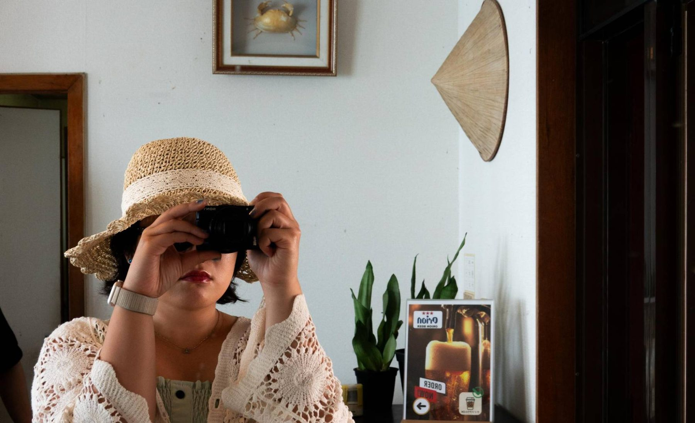
수면 위
직접 찍고 보정한 사진들. 남들이 안 쓰는 구도를 좋아합니다.
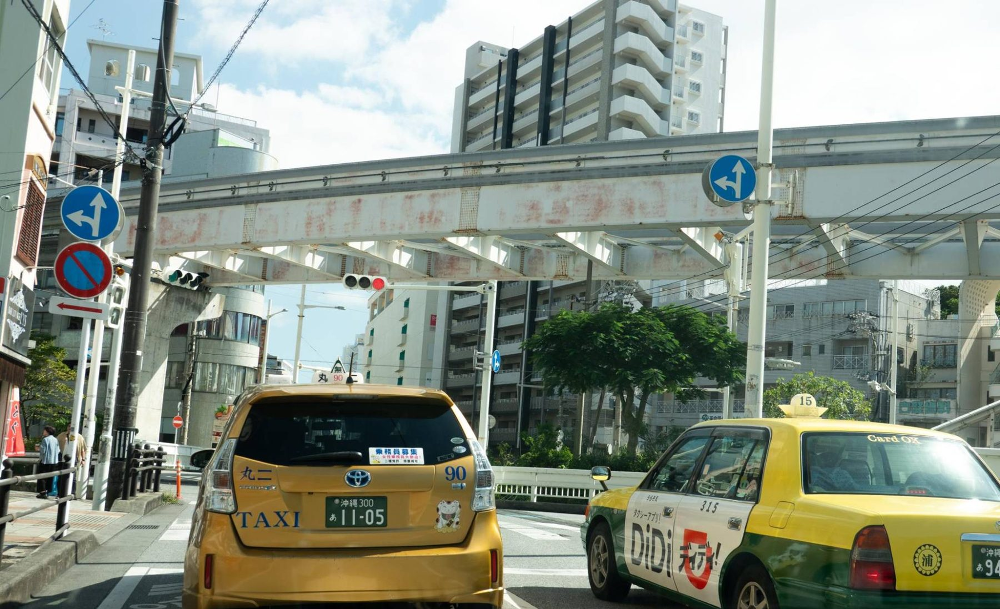
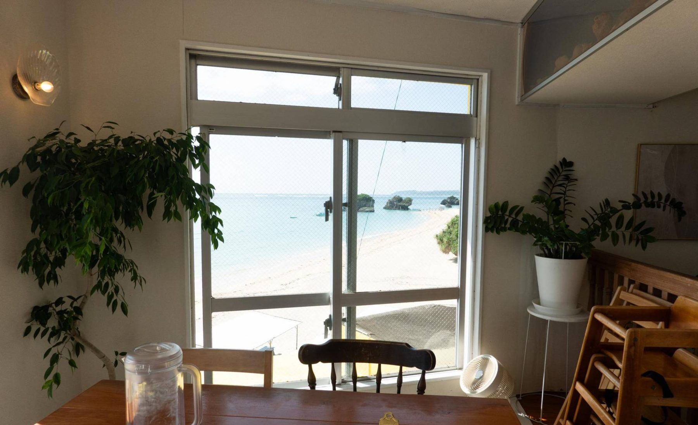
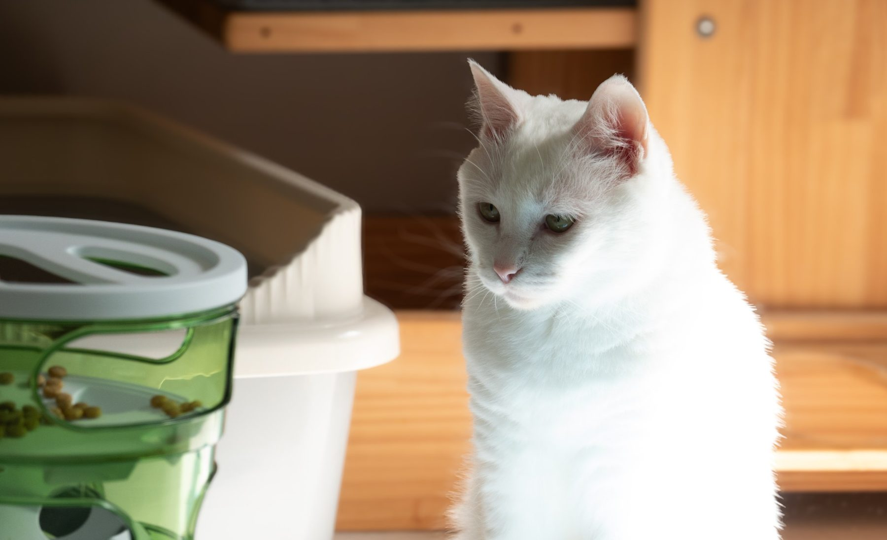
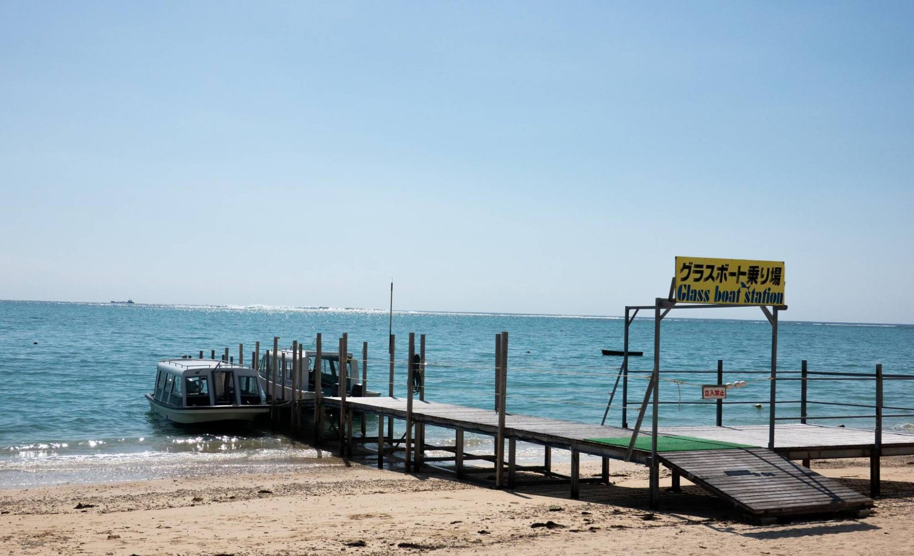
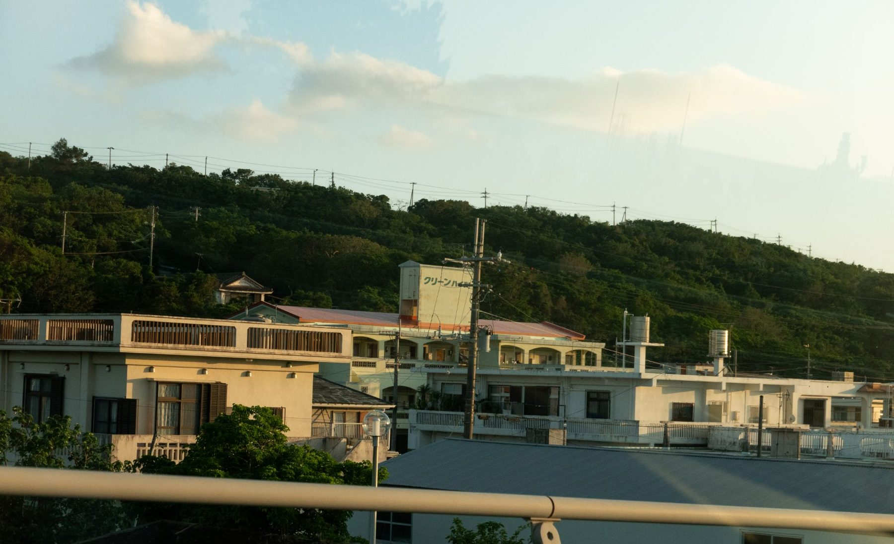
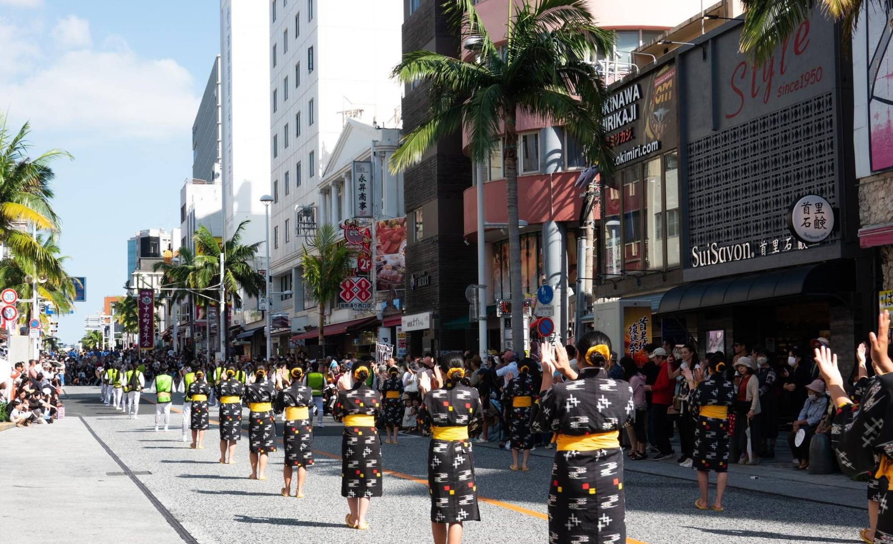
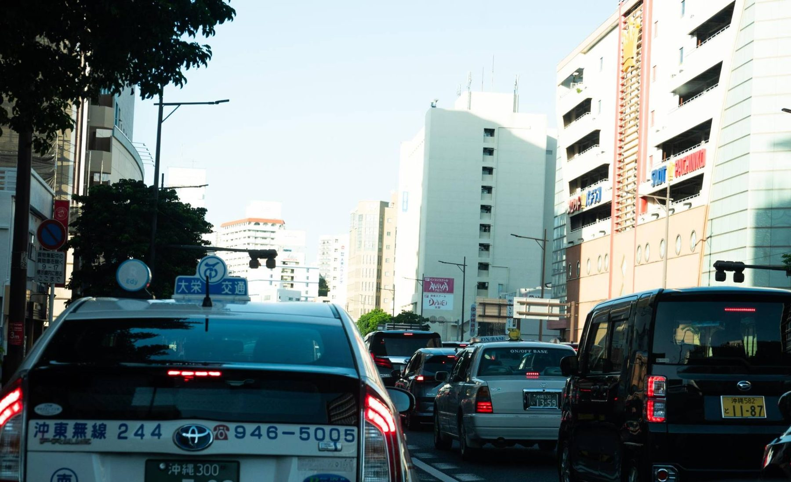
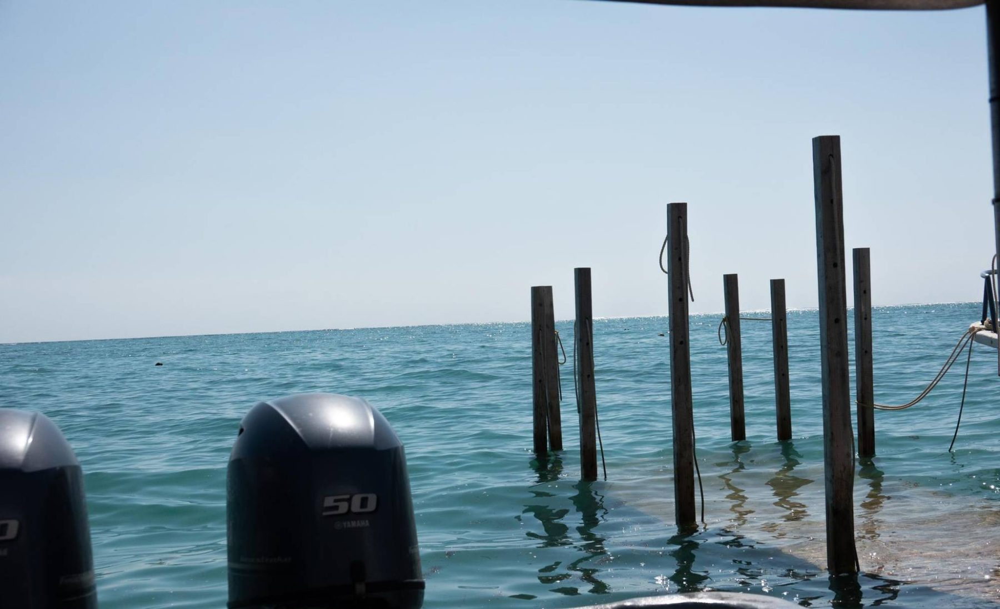
여기서부터 들어갑니다.이제 조금 깊은 이야기.
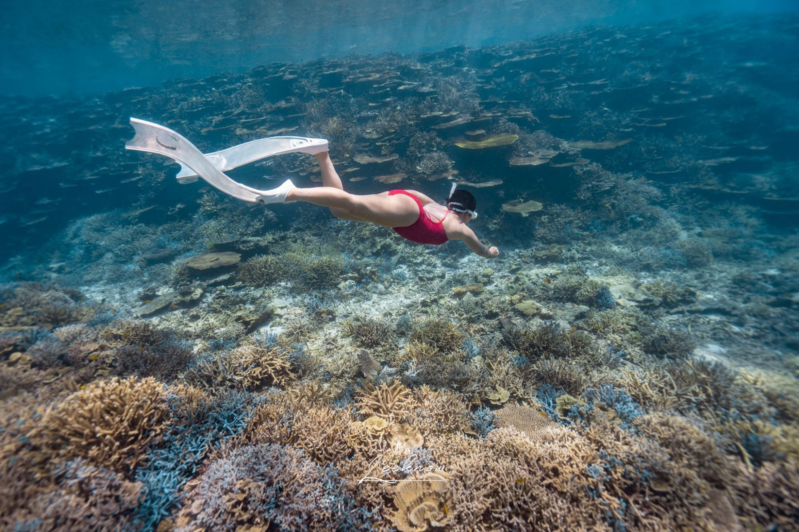
-5m · 나에 대해
같이 일한 사람들은 저를
“열정 있는 사람”이라고 부릅니다.
카메라 파이프라인처럼 눈에 보이는 결과물을 만드는 일을 좋아합니다. 카메라 프레임 한 장, 스트리밍 응답 한 줄이 매끄럽게 나올 때까지 끝까지 붙잡는 편입니다.
- 2019–
- LINE iOS
- 2023
- WWDC 커버리지 출연
- 2024
- LY HACK DAY 수상
-12m · Work
만들어 온 것들
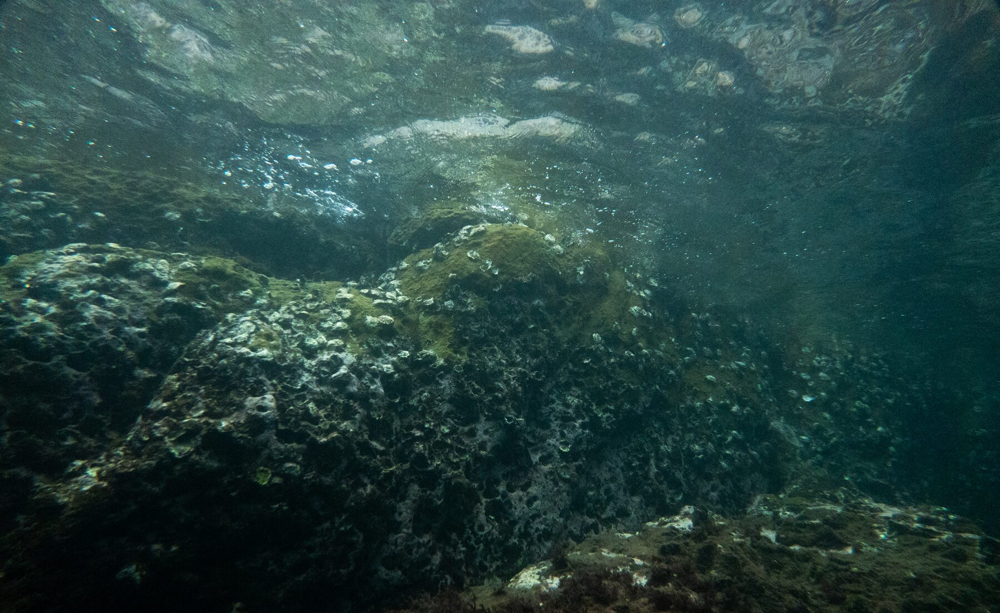
-20m · 그냥 좋아서 만든 것
고양이 사랑방
project cat-ddong
설문 13개에 답하면 고양이가 된 나가 나옵니다. 귀 모양은 내가 남의 이야기를 듣는 방식에서, 꼬리는 기분이 티 나는 정도에서 정해집니다. 설문만으로 약 37만 가지 고양이가 나옵니다.
“귀엽지만 쓸 데 없고, 내가 즐거운 것을 만들자.”
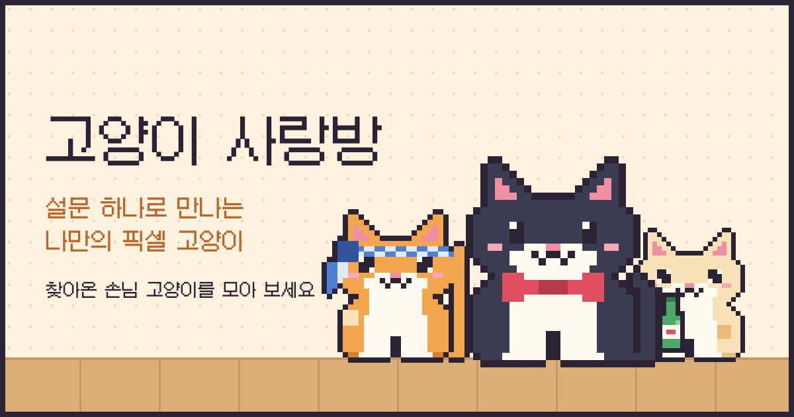
-24m · 더 깊은 기록
연구와 학교 프로젝트
-32m · Log
잠수 기록
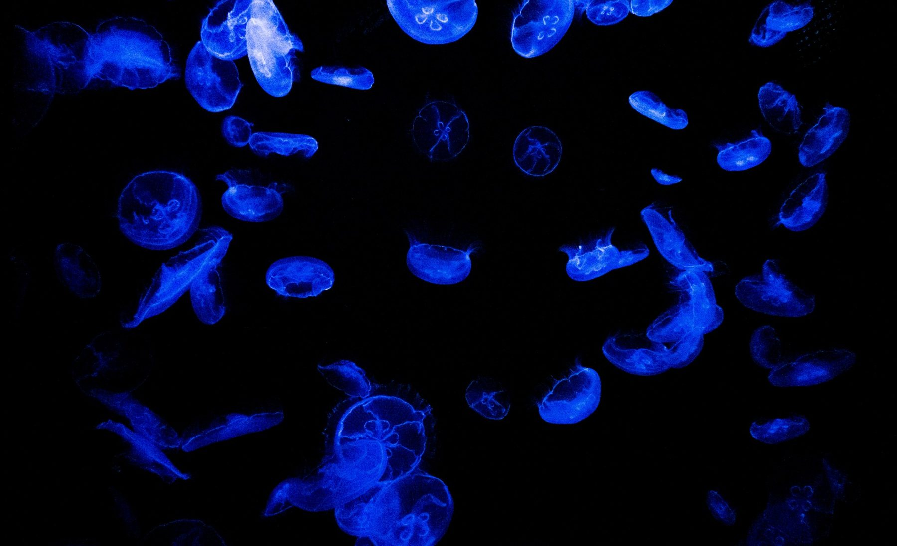
Photographs by Kayoung Lee, except where noted